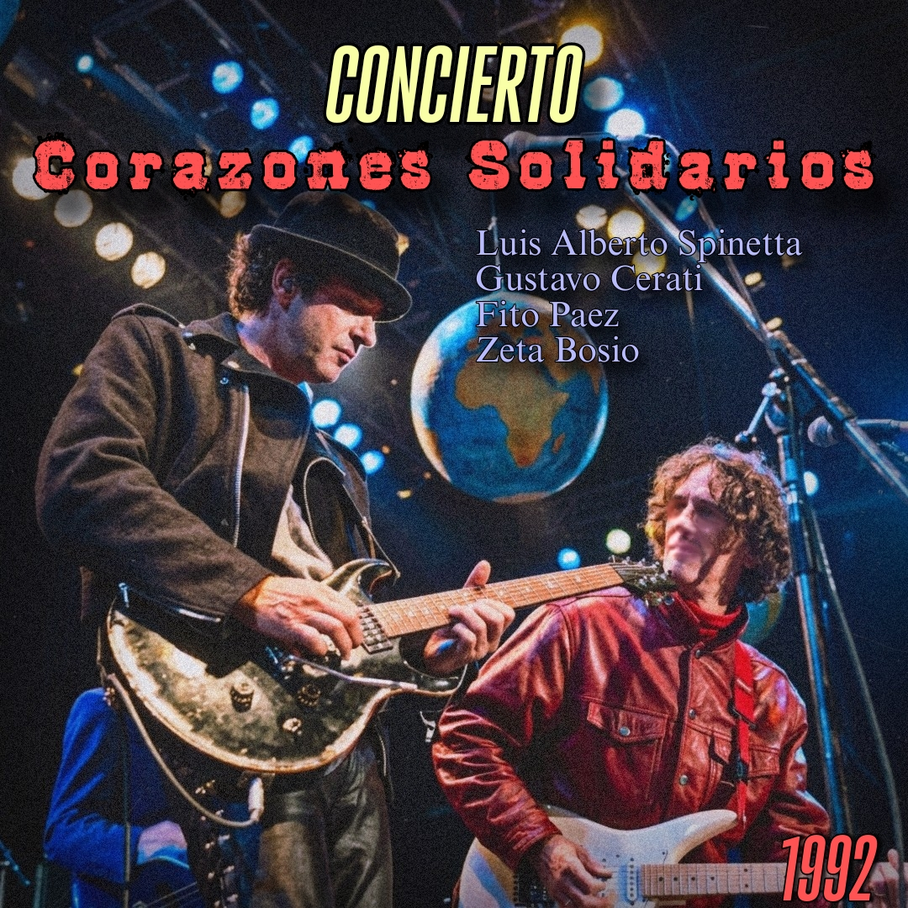

18 de julio, 1992 - Buenos Aires, Argentina

El festival Rock de Corazones Solidarios fue uno de los conciertos masivos más recordados del rock argentino de comienzos de los años noventa. Realizado sobre la Avenida 9 de Julio, el evento formó parte de la campaña de concientización vinculada a la exposición internacional ExpreSida, reuniendo a miles de personas en un recital gratuito dedicado a promover la prevención del VIH/SIDA.
El momento cúlmine de la noche se produjo cuando Luis Alberto Spinetta invitó al escenario a Gustavo Cerati, Fito Páez y Zeta Bosio para interpretar "Seguir viviendo sin tu amor", consolidando una de las postales más emblemáticas de la unión generacional del rock nacional.
La portada de esta edición fue recreada con inteligencia artificial, utilizando como base un fragmento del registro en video original del festival.
Material difundido con fines culturales y de preservación histórica.